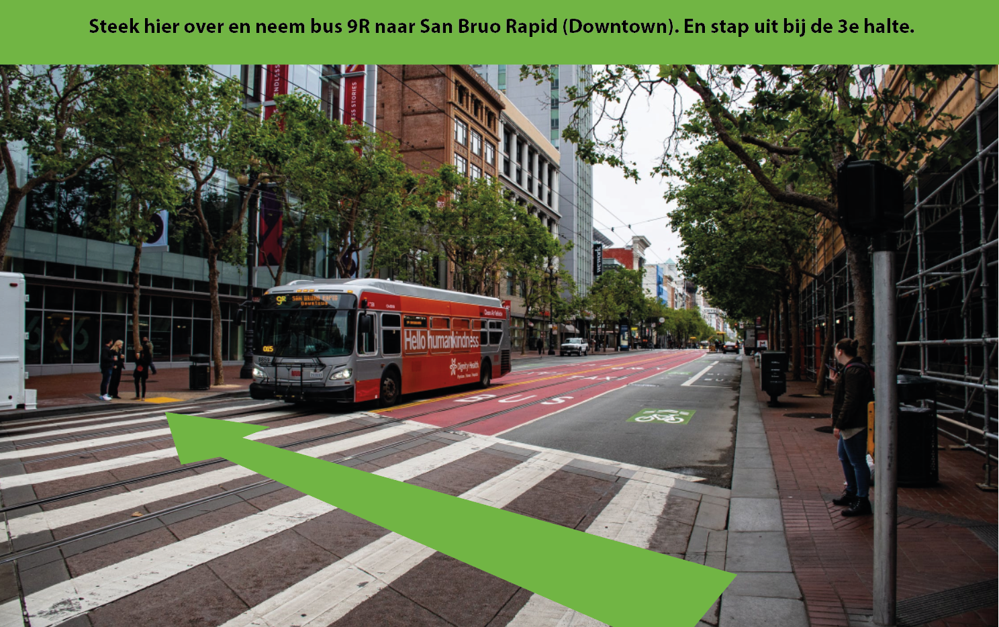
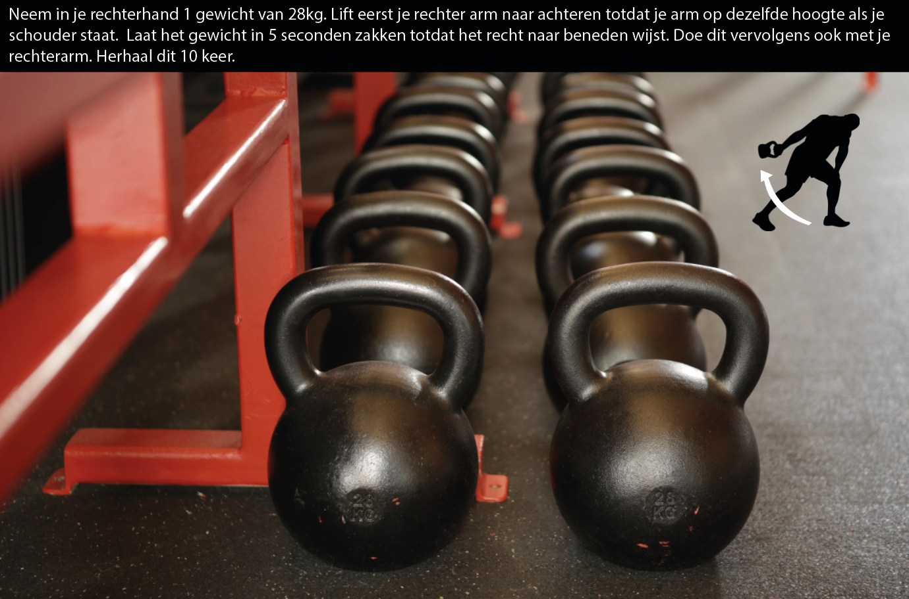
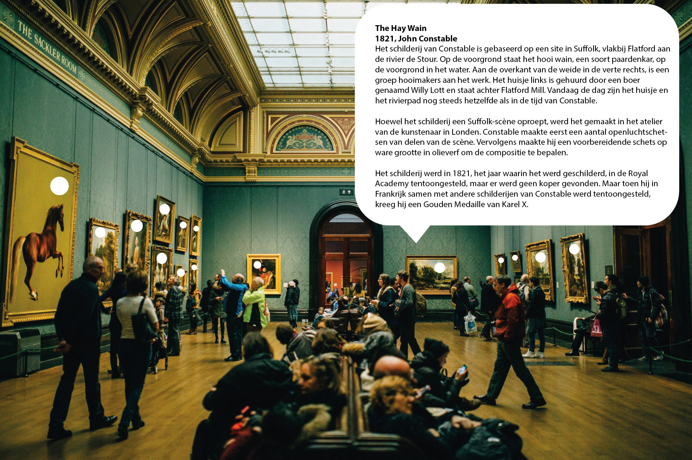
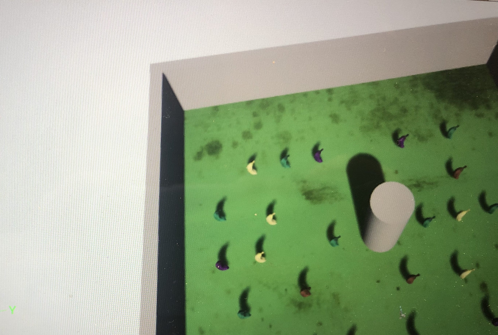

Voor deze opdracht is het de bedoeling dat er drie verschillende concepten wat betreft Virtual of Augmented Reality worden bedacht. De concepten die ik ga bedenken hebben betrekking op de onderwerpen: openbaar vervoer, sport/ beweging en kunst en/of musea.
Veel mensen hebben er last van dat ze de weg niet goed kunnen vinden als ze zich in het openbaar vervoer bevinden. Hiervoor heb ik een concept bedacht. Een app op je telefoon werkt samen met de lens/bril die je gebruikt om de AR-omgeving te zien. Op de app tik je je bestemming in en je drukt op start. Vervolgens wordt met een groene pijl, die je alleen ziet als je een bril op zet of een lens in doet, aangegeven welke kant je op moet en welke bus/tram/metro/trein je moet nemen. Het doel hiervan is dat je hierbij niet de hele tijd op je telefoon hoeft te letten waar je heen moet en dat dat ongelukken in het verkeer kan laten verminderen. De app in samenwerking met je lens/bril geeft je actuele informatie over waar jij heen moet. Het concept maakt gebruik van een GPS-tracker, GPS-navigation, gyroscoop, een GPS-navigatie app, bluetooth en een verbinding met een openbaar vervoer app. Bluetooth is nodig om de 2 apparaten met elkaar te laten verbinden. De GPS is nodig om te weten waar je je bevindt om zo je route te kunnen bepalen naar je bestemming. De gyroscoop is nodig om om je heen te kunnen kijken waar je heen moet en de verbinding met de openbaarvervoer app moet worden gelegd om zo te kijken wat de reisoptie is.
Sommige mensen willen sporten en afvallen maar weten niet hoe zij hun doelen het beste kunnen bereiken. Hiervoor heb ik een AR-concept bedacht. Mensen kunnen hun afval-/ traindoelen in een app invoeren. Ook kunnen ze invoeren hoe fit ze nu al zijn. De app berekent welke oefeningen daarbij het beste passen. Tijdens het sporten zet je deze AR-bril/lens op. Deze geeft je instructies over welke oefeningen je moet doen, hoe zwaar en hoe vaak je deze moet doen. Het concept maakt gebruik van een GPS-tracker, GPS-navigation, gyroscoop, bluetooth, een bijbehorende app, accelerometer en videobeeld. Als je je in de sportschool bevindt zal deze andere oefeningen kunnen geven dan wanneer je je thuis bevindt. De AR-bril/lens projecteert de oefening die jij moet gaan doen. De bedoeling is dat je deze oefening volgt. De projectie van de bril/lens geeft exact aan wat je moet doen en op welk tempo (sneller of langzamer) door de accelerometer. Als een oefening klaar is, verwijst deze je door naar de volgende oefening. Het doel van dit concept is om mensen te helpen om hun sportdoelen te behalen en ze te ondersteunen in hoe zij dit kunnen behalen.
In een kunstgalerie staan vaak bordjes met teksten uitleg over het kunststuk. Vaak komt het voor dat je het niet gelijk kan lezen wanneer je wilt omdat er te veel mensen voor staan. Hiervoor heb ik een oplossing bedacht. Door het volgen van je oogbeweging kan je een uitleg over een kunststuk verschijnen door het dragen van een AR-lens/bril. Dit concept maakt gebruik van een GPS-tracker, gyroscoop, accelerometer, oogtracking en informatie over de kunststukken. Om die reden is de GPS-tracker ook nodig. Oogtracking is hierbij van groot belang. Aan de hand van hoelang je naar een tekstbordje staart, wordt gekeken of het tekstje wel of niet moet worden laten zien. Het doel is dus dat men de bordjes bij de kunstwerken kan lezen op elk moment dat hij of zij wenst, zonder dat mensen hem of haar in de weg staan.
In deze opdracht moest ik mijn gemaakte bananen game uitbreiden. Mijn game bestond uit een rood blokje die bananen kon opeten. Ik wilde een leuke interactie aan mijn blokje toevoegen. Daarnaast wilde ik het spel meer kleur geven. Om deze reden heb ik de vloer van de game groen gemaakt en de bananen verschillende kleuren gegeven. Om het blokje leuk te maken, heb ik ervoor gezorgd dat deze veranderd van kleur. Deze begint wit en wordt dan roder en zo gaat dit door.
Ik heb een artikel gevonden waarin wordt gezegd dat er een nieuwe Ikea-app komt waarmee kan worden laten zien hoe meubels er in een eigen omgeving uitzien. Ik vind dit een heel gaaf idee, omdat je je zo kan voorstellen hoe de meubels en items uit de winkel er in je eigen huis uitzien. Dit wordt mogelijk gemaakt doordat je de afmetingen van de kamers in je huis in kan voeren. Via de app kan je ook gelijk meubels en andere items bestellen.
Wat ik hier zo interessant aan vind, is dat steeds meer digitaal wordt. Het is voor men een gemak om niet meer naar de winkel te gaan. Ze kunnen zo snel kijken meubels het in hun eigen woning staan op het moment dat het hen uitkomt. Daarnaast heb je gelijk een beeld van hoe het staat in je eigen woning. Ik vind het enorm gaaf hoe je elementen uit een winkel in je eigen woning kan plaatsen om alleen te kijken hoe het daar zal staan in het echt.
Een ander interessant project vond ik van het bouwbedrijf Hendriks Stalen Bekistingstechniek. Zij gebruiken nu een Augmented Interactive Reality platform van Atos. Door dit platform kunnen de werknemers levensecht zien hoe bekisting mogelijk wordt gemaakt. Doordat ze zien hoe het resultaat eruit moet komen te zien en hoe dat in zijn werk gaat, kunnen de werknemers veel sneller en efficiënter te werk gaan.
Ik vind dit een interessant project, omdat het gaat om efficiency. De bouw duurt over het algemeen lang en ik denk als zoiets echt voor efficiency zorgt dat dit een groot voordeel oplevert, omdat er enorm veel tijd en geld gewonnen kan worden. Verder vind ik het enorm gaaf hoe zoiets zo gedetailleerd gevisualiseerd kan worden zodat men exact begrijpt wat ze moeten doen.
Ik vond het een interessant en leuk onderwerp. Ik denk dat dit onderwerp zeker veel toekomst kent. In mijn omgeving zie en hoor ik steeds meer mensen praten over VR en Ar. Het is heel opkomend. Je ziet ook steeds meer van deze VR/AR brillen verschijnen en ik hoor er steeds meer mensen over praten. Ik denk dat er later ook veel meer mensen zo een bril aanschaffen, omdat zij dan bijvoorbeeld zelf een film kunnen kijken waarbij het lijkt alsof zij er levensecht in zitten. Ook door middel van Augmented Reality kunnen veel problemen opgelost worden (zie hiervoor mijn bedachte concepten).
Wat ik het meest waardevolle aan dit onderwerp vind, is dat je jezelf bij AR in je huidige wereld bevindt, maar dat er toch meer informatie beschikbaar is die alleen jij of een bepaalde groep ziet. Ik vind dit iets mysterieus hebben en dat vind ik heel gaaf. Dit vind ik veel waarde hebben, omdat je naar mijn idee in de toekomst zelf zou kunnen kiezen wat voor (persoonlijke) informatie je beschikbaar wilt hebben via AR.
Bele, B. (2013, May 8). Google Glass sensors list unearthed, augmented reality apps very possible in the future.
Geraadpleegd op 28 mei, 2019, van https://www.androidauthority.com/google-glass-sensors-list-204770/
Bouwsector kan tot 70 procent sneller werken met Augmented Reality-platform van Atos - Emerce. (2019, May 28).
Geraadpleegd op 28 mei, 2019, van https://www.emerce.nl/wire/bouwsector-kan-tot-70-procent-sneller-werken-augmented-realityplatform-atos
Fygi, K. (2019, May 28). Nieuwe Ikea-app: meubels in augmented reality bekijken en kopen.
Geraadpleegd op 28 mei, 2019, van https://twinklemagazine.nl/2019/05/ikea-app-meubels-in-ar-kijken-en-kopen/index.xml
Hoe werkt AR - AR en sensortechnologie - 3Bplus. (2017, May 1).
Geraadpleegd op 28 mei, 2019, van https://3bplus.nl/hoe-werkt-ar-ar-en-sensortechnologie/
John Constable | The Hay Wain | NG1207 | National Gallery, London. (n.d.).
Geraadpleegd op 28 mei, 2019, van https://www.nationalgallery.org.uk/paintings/john-constable-the-hay-wain